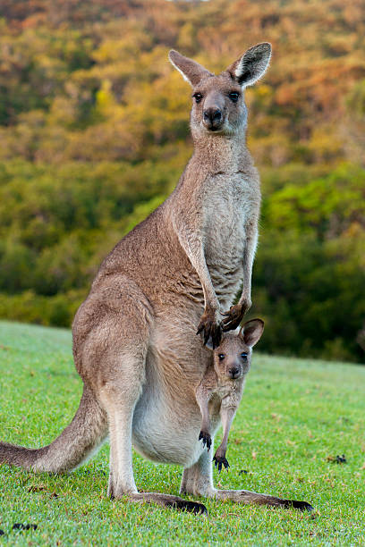

The kangaroo is a marsupial from the family Macropodidae (macropods, meaning "large foot"). In common use the term is used to describe the largest species from this family, the red kangaroo, as well as the antilopine kangaroo, eastern grey kangaroo, and western grey kangaroo. Kangaroos are indigenous to Australia and New Guinea. The Australian government estimates that 42.8 million kangaroos lived within the commercial harvest areas of Australia in 2019, down from 53.2 million in 2013. Kangaroos have large, powerful hind legs, large feet adapted for leaping, a long muscular tail for balance, and a small head. Like most marsupials, female kangaroos have a pouch called a marsupium in which joeys complete postnatal development. Because of its grazing habits, the kangaroo has developed specialized teeth that are rare among mammals. Its incisors are able to crop grass close to the ground and its molars chop and grind the grass. Since the two sides of the lower jaw are not joined or fused together, the lower incisors are farther apart, giving the kangaroo a wider bite. The silica in grass is abrasive, so kangaroo molars are ground down and they actually move forward in the mouth before they eventually fall out, and are replaced by new teeth that grow in the back. This process is known as polyphyodonty and, amongst other mammals, only occurs in elephants and manatees.
